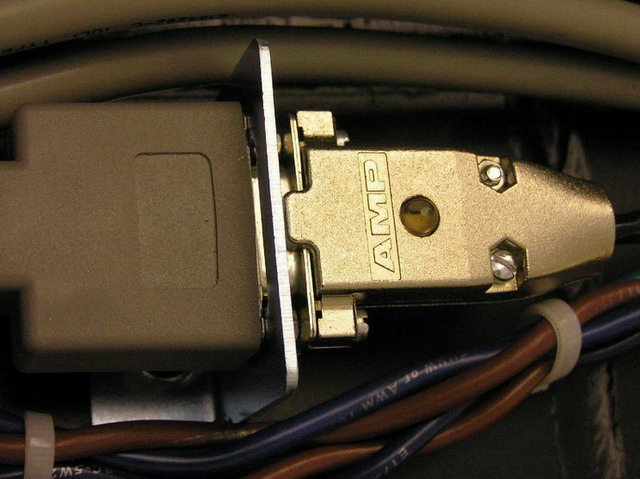
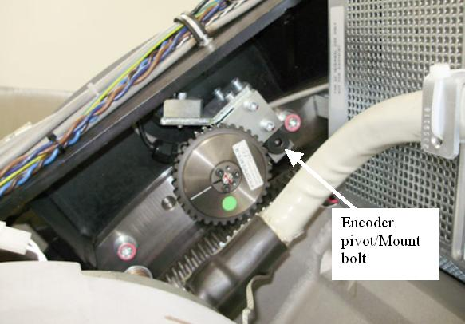

Operating Documentation
Direction 5193891-800, Rev# 5
LightSpeed 5.X Pro16 Limited Access Service Information (Adv)
Operating Documentation |
| Required Persons | Preliminary Reqs | Procedure | Finalization |
|---|---|---|---|
| 1 | Timing Not Applicable | 45 mins | 45 mins |
This replacement procedure defines the replacement process for the axial encoder and is for Limited Access Compliant.
| Last Revised: | June 30, 2008 |
| Item | Qty | Effectivity | Part# | Manufacturer | |
|---|---|---|---|---|---|
| 8 mm hex key | 1 | - | - | - | |
| Flat-blade screwdriver, thin | 1 | - | - | - | |
| Torque wrench (for 66 N-m) and 8 mm hex end socket | 1 | - | - | - | |
| Item | Qty | Effectivity | Part# | Manufacturer | |
|---|---|---|---|---|---|
| Axial Encoder Assembly | 1 | - | - | - | |
| Shock Hazard | |
| Voltage Present | |
| No service on left side while energized. |
Remove gantry right side cover.
Refer to Replacement → Gantry → Enclosure → (Cover Removal Procedures).
Turn OFF the Axial Drive and HVDC switches on the gantry’s Service Switch Panel.
Rotate the gantry to place the 48V Power supply behind the service switch panel. This places the tube at about the 10 o'clock position for easier access to the encoder.
Turn OFF the 120 VAC switch on the gantry’s Service Switch Panel.
Remove the gantry left side cover, top covers and front cover.
Disconnect the Encoder DB-9 pin connect from the gantry harness on the gantry frame above the encoder. See Illustration 1.
Illustration 1: Encoder DB 9-Pin Connect

Carefully cut cable ties as necessary.
Using the 8 mm hex key, remove the shoulder screw on which the encoder assembly pivots.
| NOTE: | Do not remove grease from screw shoulder. Some grease is necessary for free movement of assembly. |
Illustration 2: Encoder pivot/mount

Install the new encoder assembly, route and connect the cable.
Replace any cable ties removed during part removal.
Torque the mount screw to the following:
Table 1: Pivot screw torque
| 66.4 N-m | 49 lb-ft | 587 lb-in | 677 kg-cm |
Perform the Resetting the C-Pulse procedure.
Install the gantry front, top and left side covers.
Refer to Replacement → Gantry → Enclosure → (Cover Removal Procedures).
Enable 120 VAC HVDC and Axial Drive service switches from the service switch panel. Press the table drives enable button on the lower right corner of the service switch panel.
Install the gantry right side cover.
Perform a [System Scanning Test] from the [Functional Checks] menu of the service manual to ensure system operation.